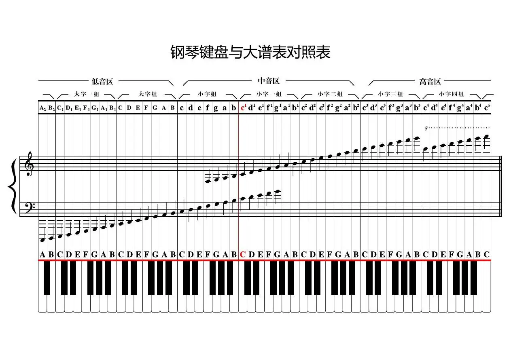

一般钢琴有88个键，其中52个白键、36个黑键，从低音开始，键盘可以分为大字二组、大字一组、大字组、小字组、小字一组、小字二组、小字三组、小字四组和小字五组。钢琴琴键的分组和音名如下图所示：

由图可见，除第一个黑键外，钢琴上的黑键均以“二、三”排列。每两个一组黑键左边的白键即为C，也就是1。
CDEFGAB（1~7）为一组，88键钢琴上共有7个完整的组，其中第4组的C被称为中央C（中央1）。
中央C所在的组被称为小字一组，每个白键用音名的小写字母右上角加数字1表示。小字一组右边完整的组依次为小字二组、小字三组、小字四组，琴键分别用小写音名右上角加数字2、3、4表示。小字一组往左依次为小字组（琴键直接用音名小写字母表示）、大字组（音名大写字母表示）、和大字一组（音名大写字母右下角加数字1表示）。最左侧的大字二组和最右侧的小字五组是两个不完整的组，分别有两根和一根白键。
不过，琴键音名的命名标准不一。在另一种常见的国际标准下，中央C为C4，白键从左到右为A0、B0、C1~B1、C2~B2......C7~B7、C8。
每组除了有7根白键外，还有5根黑键。钢琴上每两根相邻琴键（无论黑键和白键）均为相差半音关系。黑键的音名有两种表述方式，可以根据其左边或右边的白键表述，每组的五根黑键音名从左到右依次为：升C/降D、升D/降E、升F/降G、升G/降A、升A/降B。唱名依此类推。